Funciones Usuarios
Mis solicitudes
Si en el menú de la izquierda dan “Clic” sobre el botón "Mis Solicitudes +"
se expanden y contraen todas las opciones del menú, en este caso se abren “Crear” y “Listado Histórico”.
Con la función “Crear” o dando “Clic” en “Nueva solicitud” se accede a crear solicitudes, además muestra de los Absentismos que tienen contingente el saldo disponible. Desde esa pantalla, además se puede acceder a las solicitudes “En proceso” “Histórico” y “Días Promedio”
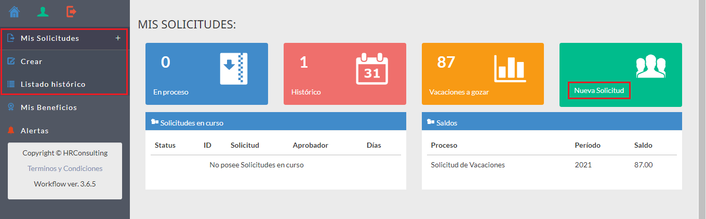
En general este manual trata del Workflow de vacaciones, en el transcurso del mismo se realizarán las aclaraciones de las diferentes de otras solicitudes cuando sea necesario.
Pantalla nueva solicitud por Usuario
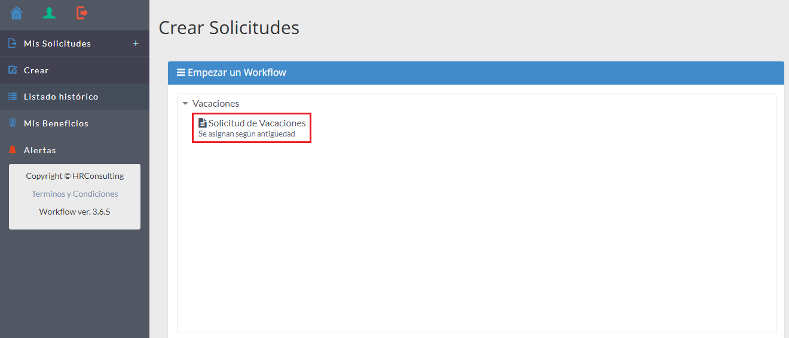
En esta pantalla deberá dar “clic” sobre el botón de la Solicitud que desee realizar, por ejemplo: "Solicitud de vacaciones” y se desplegará la pantalla siguiente:
Generar solicitudes por Usuario
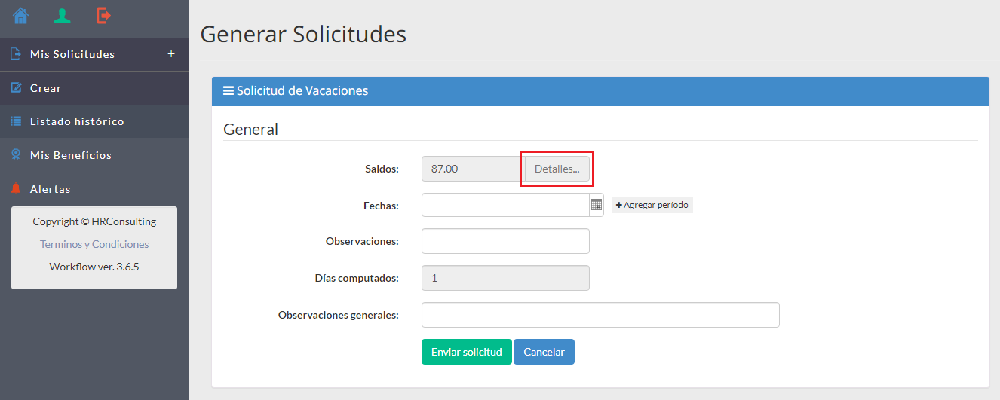
Desde la pantalla que se visualiza arriba, se puede acceder a verificar el detalle de los saldos, que pueden contener pendientes de períodos anteriores más el actual, dando “Clic” sobre la palabra “Detalles” a la derecha del saldo, en ese caso nos despliega la siguiente pantalla.
Detalle de saldos
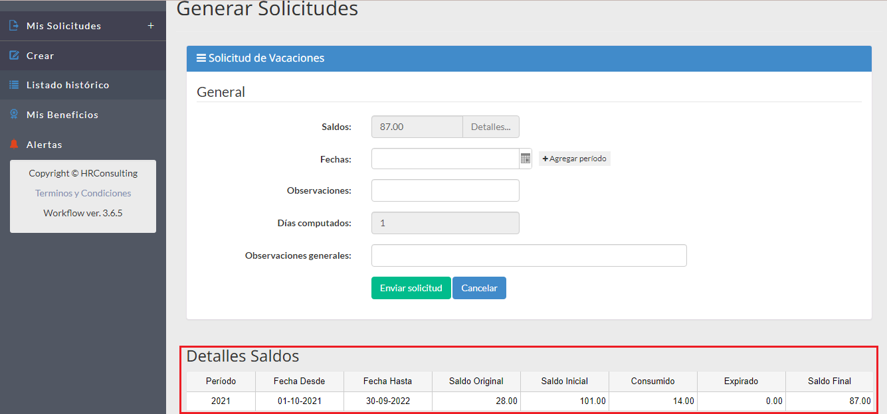
Agregar/Remover períodos
Además, es posible agregar más períodos, en el caso que uno desee cargar días de vacaciones en semanas alternas, o remover los períodos creados si no los va a usar.

Datos de una solicitud
La solicitud se genera seleccionando las fechas de inicio y fin en el calendario, se hace “clic” en el botón de calendario, al desplegarse las fechas se hace clic en el día de inicio del periodo y luego en el día fin del periodo. Se observará que queda iluminado el período solicitado. No son obligatorios los campos “observaciones” y “observaciones generales” Luego se da clic en “Enviar solicitud”.
En la pantalla que vemos a continuación hay un modelo de la carga de dos períodos.
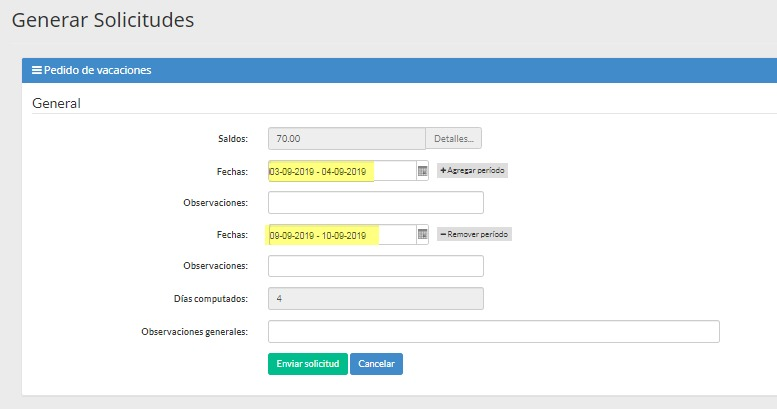
Luego de dar clic en “Enviar Solicitud” veremos una leyenda que nos indica que los datos han sido cargados, por ende, enviado al aprobador que le corresponde.
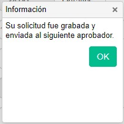
En caso de ser insuficiente el contingente, ya sea por solicitar una cantidad superior o no tener el mismo calculado, el sistema desplegará en pantalla el siguiente mensaje:
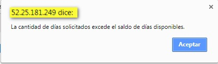
Cuando se graba correctamente el registro, si da clic en el menú de la izquierda en la función “Inicio" se desplegará la siguiente pantalla.
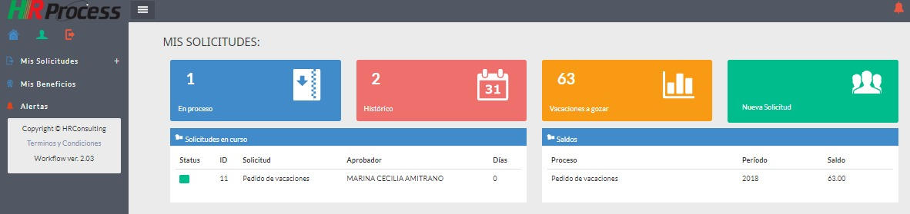
En ella veremos qué:
- En proceso 🡪 indica 1.
- Solicitudes en Curso 🡪 Indica quién es el aprobador de la solicitud.
La solicitud ha sido enviada al aprobador y le está indicando en la parte inferior derecha quién es el aprobador.
Pantalla Nueva a solicitud por gestor de carga
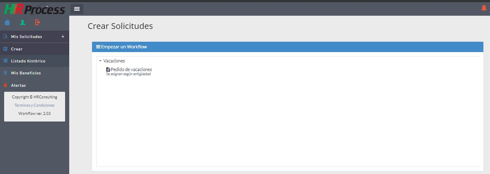
En esta pantalla deberá dar “clic” sobre el botón de la Solicitud que desee realizar, por ejemplo: “Pedido de vacaciones” y se desplegará la pantalla siguiente:
Generar solicitudes por gestor de carga
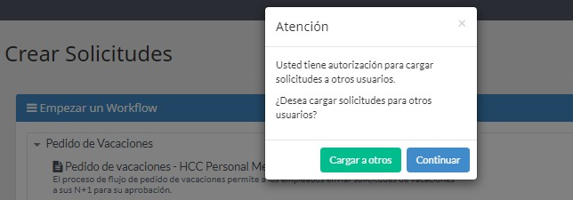
En esta pantalla cuanto es Gestor de Carga tiene que dar “clic” sobre el botón “Cargar a otros” ahí se desplegará la siguiente pantalla.
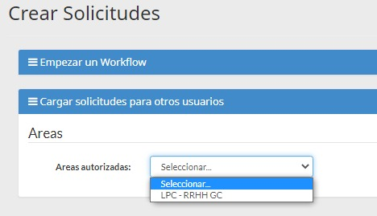
En esta pantalla deberá seleccionar el sector al cual le desea cargar los Absentismos y se desplegará la pantalla que se encuentra a continuación.
Detalle de colaboradores dependientes
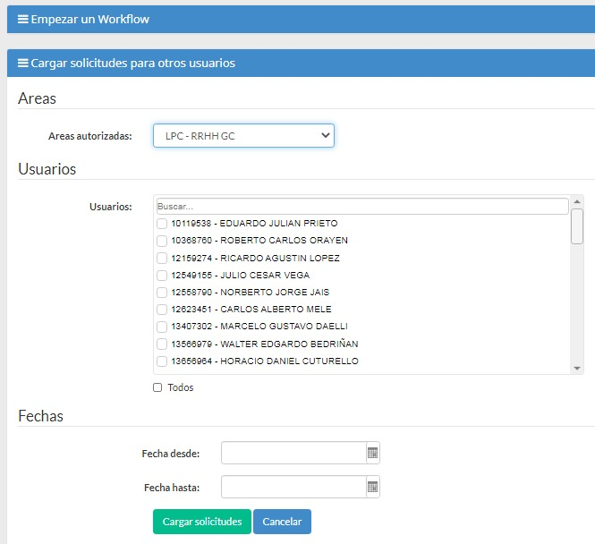
En esta pantalla hay varios opciones y acciones a realizar:
Desde la ventana de Usuario podrá comenzar a tipear el apellido de un colaborador si desea cargar sólo algunos, para achicar el margen de búsqueda en el filtro y colocar una tilde, ese colaborador queda con la tilde y podrá repetir la operación si son varios, del mismo modo sin son la mayoría pone la tilde en todos y después desmarca los que desea que no se le carguen Absentismos.
Con la tilde en todos, marca todos los colaboradores, si lo quita desmarca todos los colaboradores.
Luego deberá cargar la fecha de inicio y fin del absentismo.
Luego deberá dar “clic” en el botón cargar solicitudes y visualizará la siguiente pantalla.
Detalle de solicitudes que se cargaran
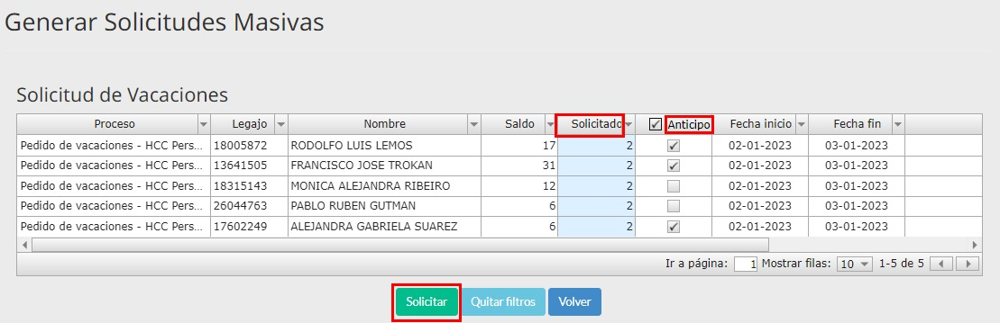
Desde esta pantalla y en el campo solicitado, puede alterar los días de Absentismo, al tipear un diferente sobre el mismo, y automáticamente cambiará la fecha de fin del mismo.
Adicionalmente para los colaboradores que hayan solicitado anticipo podrá marcar la columna anticipo, individualmente, todos y desmarcar individualmente, aquellos que no lo hayan requerido.
Aquí deberá dar “clic” sobre el botón solicitar para dar curso a la solicitud y visualizará la siguiente pantalla.

Aquí deberá cerrar y las solicitudes pasarán al siguiente aprobador.
Listado histórico de solicitudes
Luego de cargar una solicitud al dar “clic” en el menú de la izquierda, en la función “listado de solicitudes” se desplegará la siguiente pantalla:
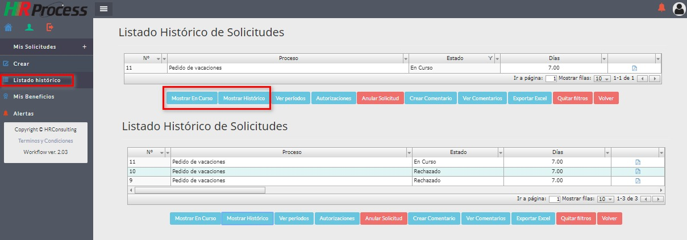
En la pantalla “listado de solicitudes” alternando con los botones “Mostrar en Curso” o “Mostrar Histórico” se pasa a los distintos tipos de solicitudes como se ve en la imagen. Se encuentran habilitadas las siguientes funciones:
- Visualizar Formulario
- Mostrar en Curso
- Mostrar Histórico
- Ver periodos
- Autorizaciones
- Exportar a Excel
- Quitar filtros
- Volver
Desplazándose con la barra de desplazamiento se visualizarán los datos hacía la derecha y son permitidas varias funciones:
Visualizar formulario
- Al dar “Clic” en la última columna de la derecha despliega el formulario de la solicitud que vemos a continuación:
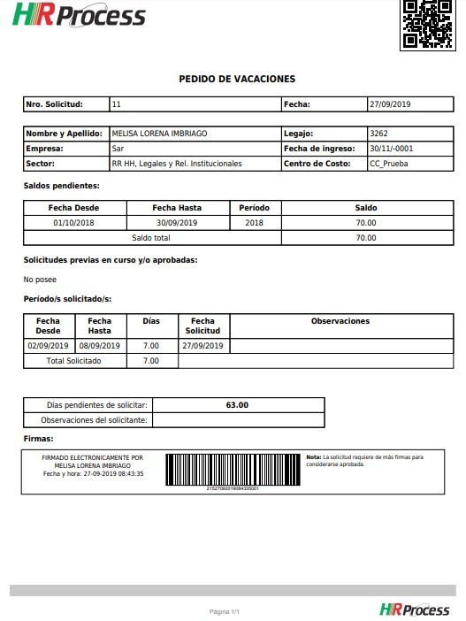
Ver períodos
- Al dar “Clic” despliega el formulario del/los períodos solicitados que vemos a continuación:

Autorizaciones
- Al dar “Clic” despliega el mensaje que vemos a continuación, indicando quién autorizará la solicitud
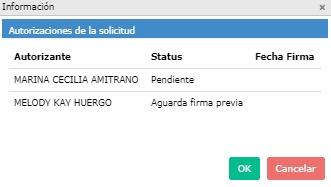
Anular solicitud
Las solicitudes pueden ser anuladas mientras estas se encuentran “En Curso” luego aprobadas deberán ser anuladas en la instancia superior.
Exportar a Excel
Los datos pueden ser exportados a Excel donde encontrará mayor información.
Alertas
Luego que el aprobador “Apruebe” o “Rechace” una solicitud dando “Clic” en la “Campanita” en la parte superior derecha, nos desplegará el siguiente mensaje: Ahí se pueden marcar todas como leídas una vez visualizadas las mismas.
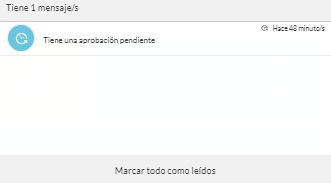
Además, en este mensaje tiene la posibilidad de marcar todas como las alertas como leídas.
El botón en el menú de la izquierda, nos desplegará el siguiente reporte:
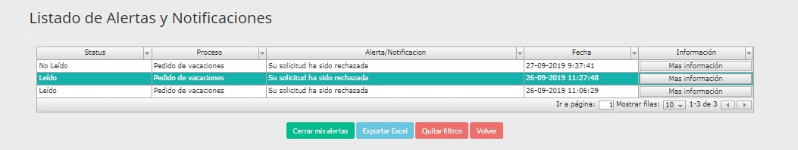
Además, en este mensaje tiene la posibilidad de:
- Marcar todas como las alertas como leídas.
- Cerrar alertas
- Exportar a Excel
- Quitar Filtros
- Volver
Cerrar alertas
Realiza la misma operación de la función “Close” sin dar mensaje.
Historial
Permite visualizar la misma información que cuando se ingresa por la función “Alerta” del menú de la izquierda que se detalla a continuación.
Al dar “clic” en el menú de la izquierda en “Alertas” visualizará la siguiente pantalla, que es la misma que ingresando por historial en el paso anterior.
Dando “Clic” sobre más información se desplegará el siguiente mensaje:
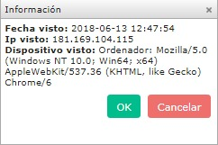
En el primero corresponde a una alerta no leída, el segundo a una alerta que ya fue leída y da la información de su lectura.